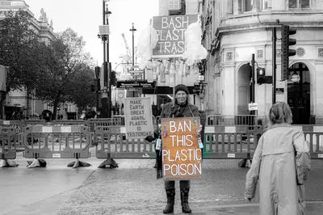

The Individualization of Responsibility
When out getting groceries, in Scotland, you have to pay a few pennies for a plastic bag, and more for paper, and even more for a reusable bag. In the USA, I've found, plastic bags are often free. Yet plastic bags are a significant source of environmental harm in both countries. Why is this the case? And why do we as consumers feel the burden of responsibility? As if we are the ones packing fruit and vegetables in ridiculous amounts of plastic, then providing environmentally damaging bags.
{kind=link}

Quick jargon guide
- Externality: a cost (or benefit) of an activity that falls on someone other than the people deciding to do it. Pollution is the textbook example. Producers create it; everyone downwind pays.
- Greenwashing: marketing that presents a company, product, or industry as more environmentally responsible than the underlying behaviour supports.
- Carbon footprint: the total greenhouse gas emissions attributable to a person, product, or organisation. The personal version of the term was heavily promoted by BP.
- Astroturfing: a campaign designed to look like a grassroots citizen movement while being funded and steered by industry.
- Producer responsibility: the regulatory principle that the company creating a product is on the hook for its full lifecycle, including disposal. The opposite of consumer responsibility.
What I mean by individualization of responsibility
The individualization of responsibility is the political move where a problem caused by industrial production, regulatory failure, or infrastructure design is reframed as a problem of personal consumer choice.[8]
Once you can convince the public that the climate, the ocean, the grid, and the river are all consequences of personal virtue, you can shift scrutiny away from the people building the factory, drilling the well, and writing the zoning code. You can also sell them a tote bag and make money while claiming to be part of the solution.
BP and the personal carbon footprint
The clearest case of this is one I often refer to when describing this to people, you have already heard of it. In the early 2000s, BP, with help from the PR firm Ogilvy, ran a campaign built around the term “carbon footprint” and an online calculator that let you total up your driving, flying, and home energy use. It is now in school curricula, corporate sustainability reports, on TV adverts and the back of your own head when you book a flight.[1][2]
The calculator did not include the question “should an oil major exist at this scale?” It did not include lobbying budgets ($1,180,000 so much this year, by the way[9]), refinery expansion plans, or the company’s own forecasted emissions. In other words, you are made to feel guilty for -- checks notes -- you driving to, uh, buy food and, uh, earn an income. By the time the framing had soaked into the culture, the average person could tell you their footprint to a tonne but could not name a single piece of legislation that had been blocked by the industry funding the calculator. This makes me very angry.
It's an elegant solution by BP. They had a horrible PR problem, they reframed it to "well, it's YOUR problem really" and sold you a tote bag.
Keep America Beautiful and the invention of the litterbug
BP, however, was not the first. In 1953, Keep America Beautiful was founded by a coalition that included the American Can Company and the Owens-Illinois Glass Company, alongside other beverage and packaging interests. The new framing was well crafted: the problem with discarded bottles by the roadside was not that disposable bottles existed, it was that people were litterbugs. The "Crying Indian" ad in 1971 is the version most people remember, even if they did not know who paid for it.[3][4]

What this did, in policy terms, was head off legislation for bottles and refillable-containers that would have shifted cost back onto the producers. If littering is a character flaw, the answer is a public awareness campaign and a fine for the offender.
The Crying Indian was not even Native American; the actor was Italian-American.[5] The whole tableau was a stage set built to redirect a policy debate. It worked for decades.
Unplug your charger, ignore the data centre
We're seeing it now. Households are told to unplug chargers, switch off standby lights, and turn the thermostat down a degree to save the grid. While it does make something of a difference (a tiny, tiny difference), data centres are incentivized to not bother with energy efficiency, are encouraged to guzzle water freely instead of using proven, but slightly more expensive solutions, and utilities are negotiating special tariffs with hyperscalers that people just trying to keep their ventilators, lights and fridge running do not have access to.
“Save the grid” campaigns aimed at households, while industrial customers are signing private deals an order of magnitude bigger, are not energy policy, they are theatre and they let the utility look like it is acting and let the public feel like they are on the hook for saving the environment.
It's like a guy burning a million car tyres is telling you to not have a BBQ this Summer, you know, to save the ozone layer.
{kind=link}
Five-minute showers in an agricultural state
In most drought-stressed regions, agriculture uses the overwhelming majority of fresh water. Residential use is a minority share, and within residential use, indoor showers and taps are a smaller slice still. The variable with the most leverage is what is being grown, where, and under what subsidy regime.
Public campaigns are instead saying five-minute showers. They say turn the tap off while you brush your teeth. They imply that if every household behaves, the reservoir will hold. It will not, because the reservoir is not being drained by households at the margin where households can act. Almond acreage, alfalfa exports, and groundwater rights are at fault, not you.[6][7]
Fashion and food waste, manufactured upstream
Fast fashion runs on overproduction: brands ship more units than the market can absorb, on the fact that markdowns and incineration are cheaper than careful planning. Then the public conversation about fashion waste settles on consumers, who are told to buy less, mend more, and feel bad about a polyester top. The top exists because the brand chose to produce three of it for every one that would sell. The shopper is downstream of that decision and gets the lecture for it.
Food waste runs the same way. Supermarkets reject produce on cosmetic grounds before it ever reaches a shelf. Suppliers grow surplus to absorb the rejections. Households are then targeted with campaigns about throwing away leftovers, which is a real but minute problem compared to the food thrown away by the tonne upstream. The household tier is the only tier where the public is invited to feel guilty, so it is the only tier most people see.
{kind=link}
The lonely commuter
Cars, in the USA, are essential for getting to work, to medical care, to visit family or friends, for entertainment, for groceries, for most things. This is by design, because car-centric infrastructure has been deliberately built. People are told, sometimes by people I otherwise agree with, that driving alone is a personal failing. Carpool. Take the bus. Bike. The implication is that the suburban commuter is choosing the car over a perfectly good alternative.
The alternative is often not perfectly good. For most of the second half of the twentieth century, in the US and elsewhere, the auto industry, oil interests, and tyre manufacturers lobbied hard for car-centric zoning, federal highway expansion, and the dismantling of streetcar and inter-urban rail networks. Land use was reshaped so that homes, workplaces, schools, and shops sit far enough apart that walking is impractical and transit cannot serve them efficiently. The same political project then turned around and labelled the resulting solo car trip a lifestyle choice. When I lived in Scotland I could walk to get groceries, I could cycle to work, and I could get the train to visit friends and family. Driving was very much optional - a luxury of sorts. It's a stark contrast to the situation in many parts of the US. I do get the bus to work sometimes, but it involves being driven to a bus station by my wife because otherwise I'd have to leave the night before to get a bus near my house to the bus station. I live in Ann Arbor, MI, which is heavily privileged, and it's not even great here.
How can people be to blame for just trying to live their lives in the system that exists around them?
Why this is working for companies
- It is cheap. A campaign telling consumers to do better costs a fraction of the industrial change it pretends to substitute for. Companies that fund the campaign get to count it as sustainability work in their annual report.
- It feels good. Most people genuinely want to act decently. And it allows more liberally minded folks to feel virtuous without challenging systems, and allowing one-upmanship amongst one another. That infighting is a distraction from systemic change.
- It is hard to argue against in public. If you say “the bag charge is not the policy,” the reaction is that you are defending plastic, or that you are too lazy to bring a tote.
- $$$. Ultimately, it makes them money. It allows companies to profit from the appearance of virtue without making substantial changes to their operations. This is the ultimate incentive for companies, profit. So we need change that removes that incentive, or the companies themselves.
{kind=link}
What the alternative looks like
To be clear, I still do little things, because it's all I feel I can do day to day. I bring the tote. I keep my phone for longer than XFinity would like, for reasons I wrote about in the post on cobalt. Doing the small things is fine. Doing only the small things, and treating them as if they were the whole of the answer, is how we got here and just very, very minorly slows our progression towards environmental doom.
Actual Goals
- Tax corporations like they are part of society, not above it. Higher corporate tax rates, windfall taxes in pollution-heavy sectors, and the end of carve-outs that reward extraction, waste, and offshoring. If a company profits from environmental harm, the public should recover that cost through tax policy.
- Punitive fines, automatic penalties, and real enforcement. Fines should scale to global revenue, not be token amounts written off as a cost of doing business. Repeat offenders should face escalating sanctions: permit suspensions, procurement bans, and forced shutdowns until compliance is verified by independent auditors.
- Break up firms that are structurally abusive. When monopolies or oligopolies block reform, governments should use antitrust and public-interest powers to dismantle companies that are too large, too concentrated, and too politically captured to regulate effectively.
- Personal accountability for executives. CEOs and senior officers who knowingly sign off on illegal dumping, fraudulent reporting, or major safety failures should face personal civil and criminal liability, including disqualification from serving as directors and, where warranted, prosecution.
- Public control over factories and supply chains. Build strong regulatory bodies with inspection powers, subpoena authority, mandatory public reporting, and enforcement staffing that cannot be quietly gutted. Critical supply chains should be governed in the public interest, not left to private PR departments.
Back to the supermarket
When I see plastic bags at the checkout and need to use them, I'm angry at Meijer, Kroger, Asda, Morrisons, etc. The bag is not something that is my fault, it's theirs, so is what is in the bin behind the shop, in the field where the lettuce was grown, on the lorry that drove it across the country, and in the lobbying budget of the company that decided how it would be wrapped.
Personal virtue is fine but it is not policy. The point of noticing this pattern is not to feel cynical about it but to shift the focus from individual actions to systemic change.
If we keep the conversation pinned to the checkout, the people who designed the system will keep getting away with designing it. If we move the conversation upstream, even a little, the question stops being “are you a good consumer” and starts being “Why are people profiting from destroying our environment?”
{kind=link}
References
- The BMJ. Origins of the term “carbon footprint.” Confirms that the advertising agency Ogilvy & Mather developed the carbon footprint calculator for BP in 2004, with the explicit goal of repositioning responsibility for emissions onto individual consumers. bmj.com
- Conservation Law Foundation. The Carbon Footprint Sham. Historical analysis of BP’s $200 million “Beyond Petroleum” rebranding campaign and its use of personalised carbon accounting. clf.org
- Keep America Beautiful. Our History. The organisation’s own archives confirm its founding in 1953 and list the American Can Company, Owens-Illinois Glass Company, and the American Petroleum Institute among its founding members. keepamericabeautiful.org
- EBSCO Historical Research Starters. Academic summary confirming Keep America Beautiful was established by beverage-container executives specifically in response to early deposit-return legislation, with a deliberate strategy to shift blame onto the “litterbug.”
- Wikipedia. Iron Eyes Cody. Biographical records confirm the actor was born Espera Oscar de Corti in Kaplan, Louisiana, to Sicilian and southern Italian immigrant parents; he falsely claimed Cherokee and Cree heritage throughout his career. en.wikipedia.org
- Public Policy Institute of California. Water Use in California. Agricultural irrigation accounts for roughly 80% of all water used by businesses and homes in California; urban and residential use accounts for only 10–20%. Perennial nut crops, led by almonds, now cover nearly half of irrigated acreage in the state. ppic.org
- California Water Impact Network. Agriculture consumes approximately 34 million acre-feet of water annually compared to 8 million for all urban and residential use combined. Almonds require 48–52 inches of water per year. c-win.org
- Michael F. Maniates. Individualization: Plant a Tree, Buy a Bike, Save the World? Global Environmental Politics, Vol. 1, No. 3, pp. 31–52, August 2001. The foundational academic text on the individualization of environmental responsibility.
- OpenSecrets. BP lobbying expenditure summary. opensecrets.org
Common questions
Are you saying personal choices do not matter?
No. Personal choices matter, and many of them are worth making for their own sake. I am saying that personal choices are not a substitute for regulation, planning, and producer accountability, and that treating them as if they were is the framing that industries have actively promoted for decades.
Isn’t this just letting consumers off the hook?
It is not about hooks. It is about where pressure is most useful. A household reducing its water use during a drought is a fine thing. A household believing that its shower is the policy answer to a drought caused mostly by agricultural and industrial allocation is a misallocation of public attention.
What about companies that genuinely try to do better?
Some do, and they should be supported, including with money. Fairphone, Framework, refill brands, repair-friendly product lines, and similar efforts are real. The point of the post is not that no company tries. It is that voluntary effort at the firm level does not scale to fix structural problems without regulation that levels the field for the firms doing the right thing.
How do I push for change beyond personal choices?
Show up to local planning meetings, especially on housing, transit, and zoning. Support extended-producer-responsibility legislation when it is on the ballot or in front of your representative. Back unions and community groups that contest industrial permits. Vote with the policy in mind, not just the candidate. Most of this is unglamorous and most of it works better than the tote.
Is there a one-line version of the argument?
You did not cause the pollution by buying the wrong bag. You are being asked to feel like you did, by people who would rather you were thinking about the bag than thinking about them.